Capítulo 6 Visualização de dados
Pré-requisitos do capítulo
Pacotes que serão utilizados nesse capítulo.
## Pacotes
library(tidyverse)
library(palmerpenguins)
library(datasauRus)
library(gridExtra)
## Dados
penguins <- palmerpenguins::penguins
## Edição dos nomes das colunas para português
colnames(penguins) <- c("especies", "ilha", "comprimento_bico",
"profundidade_bico", "comprimento_nadadeira",
"massa_corporal", "sexo", "ano")6.1 Contextualização
A visualização de dados através de gráficos frequentemente é a melhor forma de apresentar e interpretar as informações contidas em seus estudos, fazendo uma síntese para melhor entendimento de padrões. Geralmente, os gráficos são necessários em quase todas as análises estatísticas, além de enriquecer a argumentação e discussão de hipóteses levantadas para publicações, trabalhos de consultoria, TCCs, dissertações, teses, entre outros.
Existem vários tipos de gráficos para representar os padrões em seus dados para diferentes finalidades. Esses diferentes tipos de gráficos podem até mesmo ser usados para representar o mesmo tipo de dado. Nesta seção, focaremos nos gráficos mais simples para representar uma ou duas variáveis (i.e., gráficos bidimensionais). Dependendo do tipo de variável (categórica ou contínua – veja os tipos de variáveis na Figura 2.2 do Capítulo 2), os gráficos mais indicados para representar os dados mudam. De forma simplificada, os gráficos são representações dos nossos dados tabulares, de modo que os eixos representam as colunas e as feições (pontos, linhas, barras, caixas, etc.) representam as linhas.
Comumente nos gráficos são representados uma ou duas colunas, quando muito três, em gráficos de três dimensões. Para mais colunas, partimos para dados agregados que podem ser vistos no Capítulo 9 de análises multivariadas. Além disso, a utilização de mais de duas colunas pode estar relacionado com outras partes estéticas (e.g. aes() no pacote ggplot2) do gráfico como cor, forma ou tamanho de pontos, linhas ou outras feições.
Dessa forma, dedicamos esse capítulo inteiramente a apresentar os principais conceitos, como a gramática de gráficos, e uma apresentação geral que pode funcionar como “um guia de bolso” de gráficos, uma vez que apresentamos os principais tipos de gráficos para análises ecológicas e estatísticas. Além disso, no último tópico focamos na finalização (ajustes finos) de gráficos para publicações. Este capítulo fornece a base conceitual necessária para entender a visualização gráfica de dados apresentada ao longo do livro.
Existe uma ampla gama de pacotes para fazer gráficos no R, sendo esse um ponto muito forte dessa linguagem. Além disso, essa grande disponibilidade de pacotes e funções permitem a visualização dos mais diferentes tipos de dados, o que torna a linguagem R detentora de alta praticidade, uma vez que a maior parte dos pacotes possui uma sintaxe relativamente simples para a apresentação de gráficos excelentes e de ótima qualidade. Mais adiante no Capítulo 15, ampliamos a discussão da visualização gráfica com ferramentas para visualização de dados geoespaciais no R.
Este capítulo foi organizado em quatro partes: i) principais pacotes, ii) gramática dos gráficos, iii) tipos de gráficos (um guia de bolso para visualização de vários gráficos no R), e iv) edição de gráficos com alta qualidade para publicação. Apesar de apresentarmos diferentes pacotes com grande potencial para visualização gráfica, focaremos neste capítulo no pacote ggplot2, talvez o pacote mais comum e com maior gama de possibilidades de criação de excelentes gráficos.
📝 Importante
Neste capítulo, vamos ensinar gradativamente os comandos para construir gráficos e como editar suas diferentes camadas. Por este motivo, o leitor não verá uma padronização nos temas dos gráficos (fonte, cor, fundo do painel, etc.), uma vez que os gráficos sem edição (padrão do ggplot2) possuem temas pré-definidos. Desse modo, para fazer um gráfico com maior qualidade (chamamos aqui de versão “com ajustes finos”) será necessário adicionar comandos extras que são exatamente o foco deste capítulo. Em alguns comandos básicos o leitor vai perceber que devido aos dados utilizados, os eixos vão possuir palavras em inglês misturadas com as palavras em português. Optamos por não traduzir esses nomes para preservar o padrão que será visualizado nos primeiros comandos que cada leitor irá fazer em seu computador.
Usaremos os dados disponíveis no pacote palmerpenguins para exemplificar as funções do ggplot2, descrito no Capítulo 5.
6.2 Principais pacotes
A seguir, apresentamos uma listagem dos principais pacotes para visualização de dados no R, além das principais funções desses pacotes.
graphics: é o pacote padrão (default) do R para produzir gráficos simples, porém útil para visualizações rápidas de quase todos as classes de objetos. Possui funções como:
plot(),hist(),barplot(),boxplot(),abline(),points(),lines()epolygon(). Destacamos que a funçãoplot()pode estar presente em diversos pacotesggplot2: pacote integrado ao tidyverse (Capítulo 5), possui uma sintaxe própria baseada na gramática de gráficos por camadas (layers), necessitando de funções específicas para objetos de classes diferentes, demandando geralmente mais tempo para a construção dos códigos. Possui funções como
ggplot(),aes(),geom_*(),facet_*(),stats_*(),coord_*()etheme_*(), que são conectadas pelo operador+ggplot2 extentions: conjunto de pacotes que adicionam diversas expansões ao pacote
ggplot2. Exemplos: gganimate, GGally, patchwork e esquissevisdat: cria visualizações preliminares de dados exploratórios de um conjunto de dados inteiro para identificar problemas ou recursos inesperados usando ‘ggplot2.’ Possui diversas funções específicas:
vis_dat()para visão geral dos dados,vis_miss()para visão de dados faltantes (NA) evis_compare()para visualizar a diferença entre dadosggpubr: pacote que fornece funções simplificadas para criar e personalizar gráficos para publicação, baseados no
ggplot2. Possui funções específicas:gghistogram(),ggdensity(),ggboxplot(),ggviolin(),ggbarplot()eggscatter()lattice: pacote para visualização de dados inspirado nos gráficos treliça (do inglês Trellis, geralmente para dados com muitas variáveis que geram uma matriz retangular de gráficos). Também possui funções específicas:
xyplot(),histogram(),densityplot(),barchart(),bwplot()edotplot(). O pacote latticeExtra disponibiliza algumas possibilidades a mais para esse pacoteplotly: pacote para criar gráficos interativos da web por meio da biblioteca gráfica de JavaScript de código aberto plotly.js. Também possui funções específicas:
plot_ly(),add_histogram(),add_bars(),add_boxplot(),add_markers(),add_paths(),add_lines()eadd_polygons()
6.3 Grámatica dos gráficos
O livro The Grammar of Graphics (Wilkinson and Wills 2005) utiliza uma analogia da linguística para criar uma “gramática” para a visualização gráfica. Segundo ele, a língua se torna expressiva pelo fato da gramática criar um sistema de regras que tornam as declarações com significado conhecido. De maneira semelhante, a ideia da gramática dos gráficos cria regras para representação gráfica dos dados a partir de atributos estéticos (do inglês aesthetic) como cor, forma e tamanho que definem a geometria dos objetos, como pontos, linhas e barras (Wickham 2016). Além disso, esta gramática reconhece que tais elementos podem ser organizados em camadas, tal como construímos um mapa com diferentes camadas como elevação, hidrografia, rodovias, limites políticos, etc.
Inspirado pela gramática dos gráficos proposta por Wilkinson & Wills (2005), Hadley Wickham cria o pacote ggplot2, onde “gg” representa a contração de Grammar of Graphics (Wickham 2016). As camadas nesta gramática (layered-grammar) são organizadas da seguinte forma:
-
Camada 1 - dados
ggplot(): são as informações no formatodata.frameque serão usadas nas diferentes camadas nas funçõesaes(),geom_*(),stat_*(),facet_*()escale_*() -
Camada 2 - mapeamento
aes(): atributos estéticos, determina que colunas dodata.frameserão usadas para as representações geométricas, assim como tamanho, forma, cor, preenchimento e transparência -
Camada 3 - definição da geometria
geom_*(): define o tipo de gráfico, como pontos, boxplots, violino, linhas, polígonos, entre outros -
Camada 4 - transformações estatísticas
stat_*(): modificam, quando necessário, os dados que serão incluídos no gráfico, além de produzir estatísticas como regressões -
Camada 5 - sistema de coordenadas
coords_*(): descreve como as coordenadas dos dados são mapeadas para o plano do gráfico -
Camada 6 - facetas
facets_*(): especifica como a visualização dos elementosaes()são divididos em diferentes “janelas gráficas” -
Camada 7 - escala
scale_*(): permite o controle das características visuais (cor, forma e tamanho) dos elementos declarados emaes() -
Camada 8 - temas
theme*(): controla a aparência visual dos elementos do gráfico, como fontes, cores e legenda
Estruturalmente podemos observar a estrutura da Figura 6.1.
Figura 6.1: Esquema gráfico ilustrando as camadas que definem a strutura de organização aditiva da gramática dos gráficos (ggplot2). No exemplo, a partir de um banco de dados, o mapeamento de quais colunas representam o eixo Y e X e de um atributo gráfico (pontos) é possível construir um gráfico de dispersão que ilustra a relação quantitativa entre a variável Y e X.
Em resumo, o mapeamento gráfico do ggplot2 segue a seguinte estrutura (Wickham and Grolemund 2017):
ggplot(data = <DATA>) +
<GEOM_FUNCTION>(
mapping = aes(<MAPPINGS>),
stat = <STAT>,
position = <POSITION>
) +
<COORDINATE_FUNCTION> +
<FACET_FUNCTION> +
<SCALE_FUNCTION> +
<THEME_FUNCTION>6.4 Tipos de gráficos
Nesta seção, listamos os principais tipos de gráficos e fazemos uma descrição de quantas colunas e o tipo de variável que eles representam.
- Histograma (histogram): distribuição de frequência de uma coluna para dados contínuos (cores diferentes podem representar espécies, populações ou grupos distintos)
- Gráfico de densidade (density plot): distribuição da densidade de uma coluna para dados contínuos (assim como no histograma, cores diferentes podem ser utilizadas para representar espécies, populações ou grupos distintos)
- Gráfico de dispersão (scatter plot) e gráfico de linha: relação entre valores de duas colunas para dados contínuos (X e Y)
- Diagrama de pontos (dot plot): distribuição da quantidade de valores agrupados de uma coluna para dados contínuos
- Gráfico de setores (pie chart e donut chart): representação da quantidade de valores de uma coluna para dados categóricos, geralmente em proporção ou porcentagem
- Gráfico de barras (bar plot): representação da quantidade de valores de uma ou mais colunas para dados categóricos
- Gráfico de caixa (box plot e violin plot): distribuição de valores contínuos de uma coluna (Y) para dois ou mais fatores categóricos de outra coluna (X) no formato de caixas e também no formato de “violinos” (considerando a variação e distribuição)
- Gráfico pareado (pairs plot): relação entre valores de duas colunas para dados contínuos (X e Y), para colunas par-a-par
Para facilitar a compreensão das regras da gramática dos dados, cada tipo de gráfico segue a mesma estrutura de organização, que respeita as camadas de informação descritas na seção anterior. Podemos perceber, portanto, que algumas camadas não são necessárias dependendo do tipo de gráfico ou do conjunto de dados que pretendemos analisar.
Nos exemplos a seguir, a versão padrão se refere à representação determinada no default das funções do pacote ggplot2. Desse modo, somente informamos as variáveis que serão utilizadas dentro de cada camada e a forma geométrica (i.e., tipo de gráfico) desejada. Porém, para cada tipo gráfico apresentamos funções e argumentos para ajustes finos e personalizados.
6.4.1 Histograma (histogram)
O histograma é um gráfico extremamente popular, sendo bastante útil para visualizar a distribuição de variáveis contínuas. É bem provável que você já tenha visto um histograma quando aprendeu pela primeira vez a famosa distribuição normal (Figura 6.2).
## Dados
dist_normal <- data.frame(x = rnorm(10000, mean = 0, sd = 1))
## Histograma de uma variável contínua
ggplot(data = dist_normal, aes(x = x)) +
geom_histogram()
Figura 6.2: Histograma de uma distribuição normal com 10000 observações.
Neste histograma é possível entender que a maioria dos valores no objeto dist_normal estão próximos ao valor da média, i.e., zero. Em Ecologia, os histogramas são utilizados para visualizar, por exemplo, a variação morfológica entre espécies (subespécies, gênero, famílias, etc.), variação de parâmetros populacionais entre diferentes espécies ou dentro da mesma espécie em diferentes localidades.
Versão padrão
Vamos utilizar o conjunto de dados palmerpenguins para construir um histograma da distribuição da variável comprimento_nadadeira com a função geom_hitogram(). Esta função utiliza uma variável contínua no eixo X e a frequência de cada categoria de intervalo de valores no eixo Y. O gráfico a seguir representa a frequência de uma variável (neste caso, a medida de todos os pinguins, independente da espécie) (Figura 6.3).
## Histograma da coluna flipper_length_mm
ggplot(data = penguins, aes(x = comprimento_nadadeira)) +
geom_histogram()
Figura 6.3: Histograma da variável comprimento_nadadeira.
Definindo o número de classes
Vamos utilizar o argumento bins para definir em quantas classes a variável x deve ser dividida (Figura 6.4).
## Histograma com 10 classes
ggplot(data = penguins, aes(x = comprimento_nadadeira)) +
geom_histogram(bins = 10) +
labs(title = "10 classes")
## Histograma com 30 classes
ggplot(data = penguins, aes(x = comprimento_nadadeira)) +
geom_histogram(bins = 30) +
labs(title = "30 classes")
Figura 6.4: Histograma da variável comprimento_nadadeira para diferentes classes de divisão.
Comparando múltiplas categorias
Se quisermos comparar a distribuição de uma variável contínua entre diferentes categorias, podemos utilizar o argumento fill para colorir o gráfico. No exemplo abaixo, utilizamos cores diferentes para ilustrar a distribuição da variável X (x = comprimento_nadadeira) entre espécies diferentes (fill = especies) (Figura 6.5).
## Histograma com cores para diferentes categorias com sobreposição
ggplot(data = penguins, aes(x = comprimento_nadadeira, fill = especies)) +
geom_histogram(alpha = .4) +
labs(title = "Com sobreposiçao")
## Histograma com cores para diferentes categorias sem sobreposição
ggplot(data = penguins, aes(x = comprimento_nadadeira, fill = especies)) +
geom_histogram(position = "dodge") +
labs(title = "Sem sobreposiçao")

Figura 6.5: Histograma da variável comprimento_nadadeira para diferentes espécies com e sem sobreposição.
Ajustes finos (versão personalizada)
## Histograma exemplo
ggplot(data = penguins, aes(x = comprimento_nadadeira, fill = especies)) +
geom_histogram(alpha = .4, position = "identity") +
scale_fill_manual(values = c("darkorange", "darkorchid", "cyan4")) +
theme_bw(base_size = 14) +
labs(x = "Comprimento da nadadeira (mm)",
y = "Frequência absoluta", fill = "Espécies")
Figura 6.6: Histograma da variável comprimento_nadadeira com ajustes finos.
Principais camadas utilizadas na função geom_histogram()
aes()- Eixo X (
x): variável contínua (comprimento_nadadeira) - Preenchimento (
fill): variável categórica (especies) que define as cores tendo como base o número de níveis dentro desta categoria geom()-
geom_histogram(): para que a variável contínua seja plotada como histograma - Transparência das linhas e preenchimentos (
alpha): 0.5 (varia de 0, transparência máxima, a 1, sem transparência) - Posição das barras: o argumento
positiondefine se as barras devem ser inseridas de maneira sobreposta (position = "identity") ou não (position = "dodge") scale()-
scale_fill_manual(): para definir manualmente as cores theme()-
theme_bw(): para selecionar o tema com fundo branco -
labs(): para personalizar os títulos dos eixos X e Y, e da legenda
6.4.2 Gráfico de densidade (density plot)
Nesta seção aprenderemos a criar um gráfico de densidade no R utilizando o ggplot2. Assim como o histograma, o gráfico de densidade é utilizado para visualizar a distribuição de uma variável contínua em intervalos. Esse gráfico é uma variação do histograma que utiliza Kernel Smoother e, além de ser muito útil para visualizar distribuições, pode ser usado para testar várias hipóteses ecológicas, como descrito no Capítulo 14.
Versão padrão
Vamos utilizar o conjunto de dados palmerpenguins para plotar a distribuição da variável comprimento_nadadeira em um gráfico de densidade. Utilizaremos a função geom_density() para plotar uma variável no eixo X (Figura 6.7).
## Gráfico de densidade
ggplot(data = penguins, aes(x = comprimento_nadadeira)) +
geom_density()
Figura 6.7: Gráfico de densidade da variável comprimento_nadadeira.
Além da versão de densidade em linha, é possível utilizar o argumento fill para definir a cor de preenchimento do gráfico e o argumento alpha para definir a transparência do preenchimento. Utilizamos ainda o argumento color para definir a cor da linha (Figura 6.8).
## Argumento fill
ggplot(data = penguins, aes(x = comprimento_nadadeira)) +
geom_density(fill = "cyan4")
## Argumento fill, color e alpha
ggplot(data = penguins, aes(x = comprimento_nadadeira)) +
geom_density(fill = "cyan4", color = "black", alpha = .4)
Figura 6.8: Gráfico de densidade da variável comprimento_nadadeira com cor e preenchimento.
Comparando múltiplas categorias
Em algumas situações queremos comparar a distribuição de uma variável contínua entre diferentes categorias. Dessa forma, podemos utilizar o argumento fill para colorir o gráfico. No exemplo abaixo, utilizamos cores diferentes para ilustrar a distribuição da variável x entre espécies diferentes (fill = especies) (Figura 6.9).
## O argumento fill preenche cada nível da coluna "especies" (sem transparência: alpha = 1)
ggplot(data = penguins, aes(x = comprimento_nadadeira, fill = especies)) +
geom_density() +
scale_fill_manual(values = c("darkorange", "darkorchid", "cyan4")) +
labs(title = "Sem transparência")
## Gráfico de densidade com cores para diferentes categorias com sobreposição
ggplot(data = penguins, aes(x = comprimento_nadadeira, fill = especies)) +
geom_density(alpha = .4) +
scale_fill_manual(values = c("darkorange", "darkorchid", "cyan4")) +
labs(title = "Com transparência") 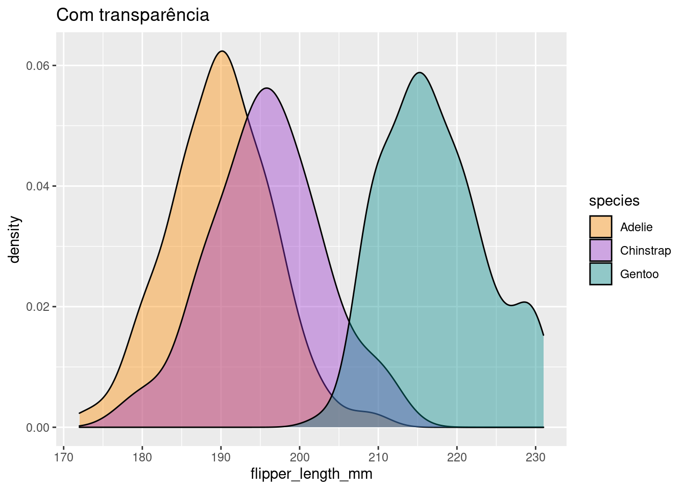
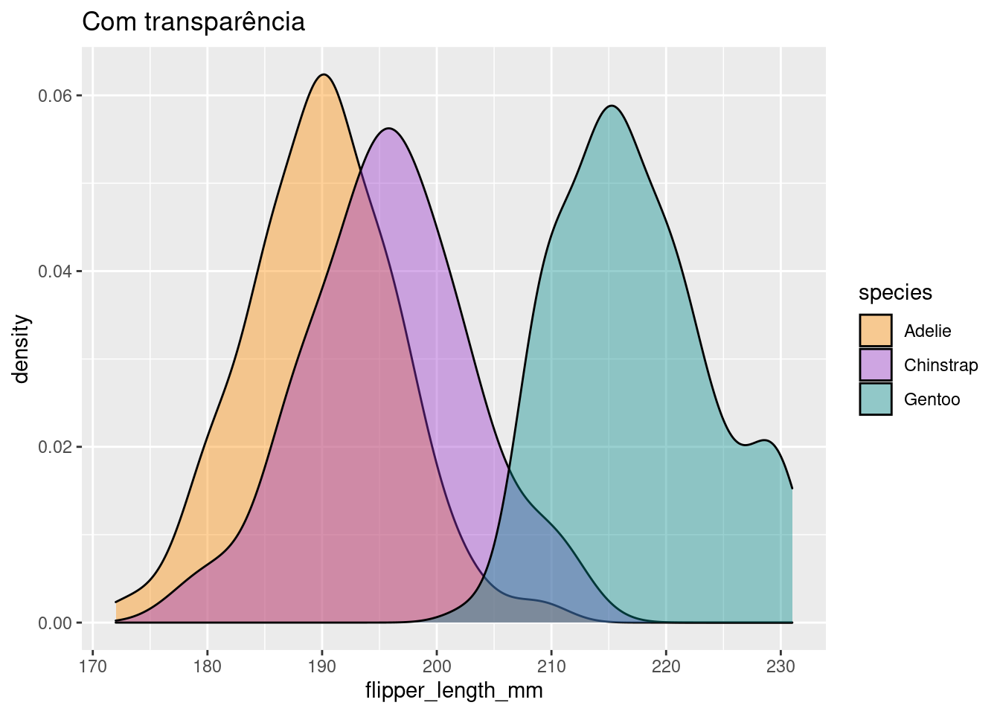
Figura 6.9: Gráfico de densidade da variável comprimento_nadadeira para diferentes espécies com e sem transparência.
Ajustes finos (versão personalizada)
## Gráfico de densidade exemplo
ggplot(data = penguins, aes(x = comprimento_nadadeira, fill = especies)) +
geom_density(alpha = .4) +
scale_fill_manual(values = c("darkorange", "darkorchid", "cyan4")) +
scale_x_continuous(breaks = seq(from = 160, to = 240, by = 10), limits = c(160, 240)) +
scale_y_continuous(breaks = seq(from = 0, to = .07, by = .01)) +
theme_bw(base_size = 14) +
labs(x = "Comprimento da nadadeira (mm)", y = "Densidade", fill = "Espécies")
Figura 6.10: Gráfico de densidade da variável comprimento_nadadeira com ajustes finos.
Principais camadas utilizadas na função geom_density()
aes()- Eixo X (
x): variável contínua (comprimento_nadadeira) - Preenchimento (
fill): variável categórica (especies) que define as cores tendo como base o número de níveis dentro desta categoria geom()-
geom_density(): para que a variável contínua seja plotada como densidade - Transparência das linhas e preenchimentos (
alpha): 0.5 (varia de 0, transparência máxima, a 1, sem transparência) scale()-
scale_fill_manual(): para definir manualmente as cores de preferência do usuário -
scale_x_continuous()escale_y_continuous(): determinam os limites (valores mínimos e máximos) para os dois eixos e, além disso, os intervalos entre os valores (breaks) theme()-
theme_bw(): para selecionar o tema com fundo branco -
labs(): para personalizar os títulos dos eixos X e Y, e da legenda
6.4.3 Diagrama de pontos (dot plot)
Uma alternativa ao histograma e ao gráfico de densidade é o diagrama de pontos (Dot plot, apesar de ser relativamente menos usado em Ecologia.
Versão padrão
Vamos utilizar o conjunto de dados palmerpenguins para visualizar a distribuição da variável comprimento_nadadeira com o diagrama de pontos com a função geom_dotplot() (Figura 6.11).
## Gráfico de pontos
ggplot(data = penguins, aes(x = comprimento_nadadeira)) +
geom_dotplot(dotsize = .6)
Figura 6.11: Diagrama de pontos da variável comprimento_nadadeira.
Comparando múltiplas categorias
Assim como nas funções geom_histogram() e geom_density(), é possível comparar categorias na função geom_dotplot() utilizando o argumento fill, bem como os argumentos color, alpha e dotsize (Figura 6.12).
## O argumento fill preenche cada nível da coluna "especies" (sem transparência: alpha = 1)
ggplot(data = penguins, aes(x = comprimento_nadadeira, fill = especies)) +
geom_dotplot(dotsize = .9)
## Diagrama de pontos com cores para diferentes categorias com sobreposição
ggplot(data = penguins, aes(x = comprimento_nadadeira, fill = especies)) +
geom_dotplot(dotsize = .7, color = "black", alpha = .4)
Figura 6.12: Diagrama de pontos da variável comprimento_nadadeira para diferentes espécies com e sem transparência.
Ajustes finos (versão personalizada)
## Diagrama de pontos exemplo
ggplot(data = penguins, aes(x = comprimento_nadadeira, fill = especies)) +
geom_dotplot(color = "black", alpha = .7, position = "dodge") +
scale_fill_manual(values = c("darkorange", "darkorchid", "cyan4")) +
scale_x_continuous(breaks = seq(from = 170, to = 240, by = 10), limits = c(170, 240)) +
scale_y_continuous(breaks = seq(from = 0, to = 1.4, by = .2), limits = c(0, 1.4)) +
theme_bw(base_size = 14) +
labs(x = "Comprimento da nadadeira (mm)", y = "Frequência", fill = "Espécies")
Figura 6.13: Diagrama de pontos da variável comprimento_nadadeira com ajustes finos.
📝 Importante
Uma das limitações do diagrama de pontos é que a sobreposição dos pontos pode não permitir a visualização apropriada desses valores sobrepostos entre diferentes grupos quando comparados.
Principais camadas utilizadas na função geom_dotplot()
-
aes(): - Eixo X (
x): variável contínua (comprimento_nadadeira) - Preenchimento (
fill): variável categórica (especies) que define as cores tendo como base o número de níveis dentro desta categoria geom():-
geom_dotplot(): para que a variável contínua seja plotada como diagrama de pontos - Transparência dos pontos (
alpha): 0.5 (varia de 0, transparência máxima, a 1, sem transparência) - Cor da borda do ponto (
color): valor padrão (se não for especificado) éblack - Tamanho dos pontos (
dotsize): valor padrão (se não for especificado) é 1 - Posição dos pontos: o argumento
positiondefine se os pontos devem ser inseridos de maneira sobreposta (position = "identity") ou não (position = "dodge") -
scale(): -
scale_fill_manual()para definir manualmente as cores de preferência do usuário -
scale_x_continuous()escale_y_continuous()determinam os limites (valor mínimo e máximo) para os dois eixos e, além disso, os intervalos entre os valores (breaks) -
theme(): -
theme_bw()para selecionar o tema com fundo branco -
labs()para personalizar os títulos dos eixos X e Y, e da legenda
6.4.4 Gráfico de barras (bar plot)
O gráfico de barras é um dos gráficos mais usados em artigos e livros de Ecologia, uma vez que permite comparar valores absolutos ou médios (combinados com alguma medida de variação, como desvio padrão) de uma variável contínua entre diferentes níveis de uma variável categórica.
Versão padrão
O gráfico de barras utiliza retângulos para representar uma variável contínua ou a contagem de uma variável categórica, sendo que o comprimento dos retângulos é proporcional ao valor que ele representa. Por exemplo, é possível comparar qual a quantidade de indivíduos medidos para cada espécie de pinguim (Figura 6.14).
## Número de indivíduos coletados
penguins_count <- penguins %>%
dplyr::count(especies)
penguins_count
#> # A tibble: 3 × 2
#> especies n
#> <fct> <int>
#> 1 Adelie 152
#> 2 Chinstrap 68
#> 3 Gentoo 124
## Gráfico de barras
ggplot(data = penguins_count, aes(x = especies, y = n)) +
geom_bar(stat = "identity")Figura 6.14: Gráfico de barras indicando a quantidade de indivíduos medidos de cada espécie de pinguim.
Além disso, é possível alterar as cores (color) e preenchimento (fill) das barras, bem como sua transparência (alpha) e largura (width), como demonstrado nos próximos quatro gráficos (Figura 6.15).
## Modificando o preenchimento
ggplot(data = penguins_count, aes(x = especies, y = n)) +
geom_bar(stat = "identity", fill = "cyan4")
## Modificando a cor e o preenchimento
ggplot(data = penguins_count, aes(x = especies, y = n)) +
geom_bar(stat = "identity", color = "cyan4", fill = "white")
## Modificando a largura da barra = .75
ggplot(data = penguins_count, aes(x = especies, y = n)) +
geom_bar(stat = "identity", width = .75) +
labs(title = "Largura = .75")
## Modificando a largura da barra = .25
ggplot(data = penguins_count, aes(x = especies, y = n)) +
geom_bar(stat = "identity", width = .25) +
labs(title = "Largura = .25") Figura 6.15: Gráficos de barras indicando a quantidade de indivíduos medidos de cada espécie de pinguim, modificando cor, preenchimento, transparência e largura das barras.
Outra possibilidade para representação do gráfico de barras é inverter a direção das barras com a função coord_flip() (Figura 6.16).
## Barras vertical
ggplot(data = penguins_count, aes(x = especies, y = n)) +
geom_bar(stat = "identity", width = .6)
## Barras horizontal
ggplot(data = penguins_count, aes(x = especies, y = n)) +
geom_bar(stat = "identity", width = .6) +
coord_flip() 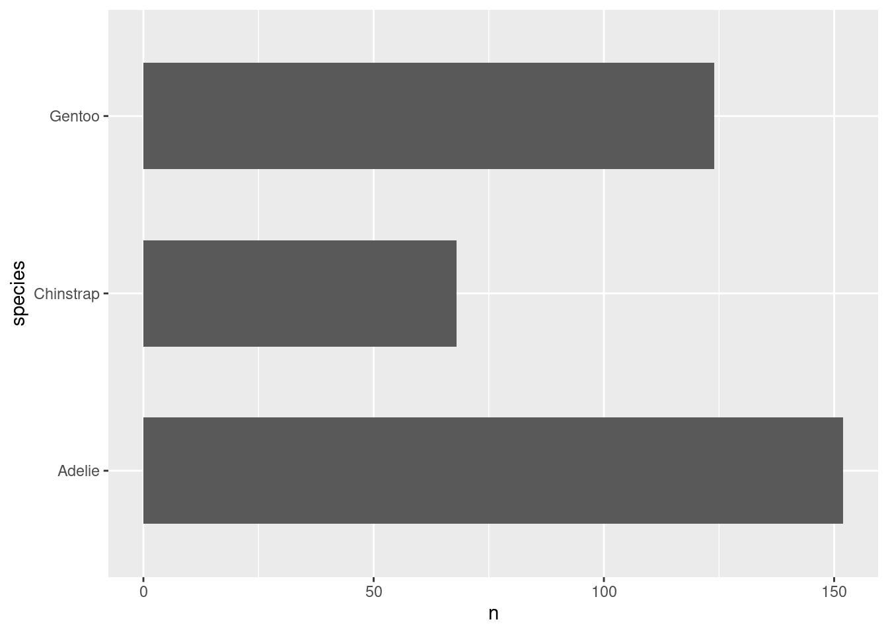
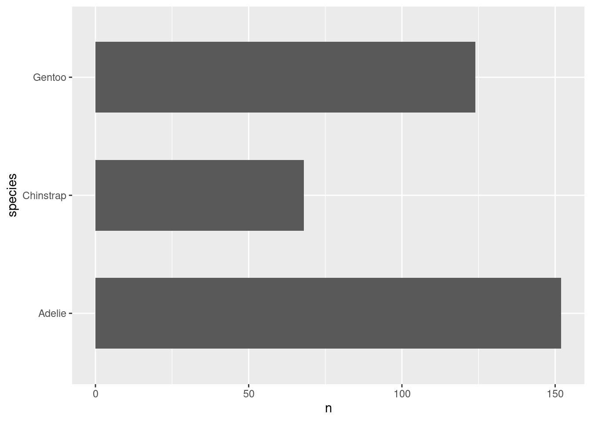Figura 6.16: Gráficos de barras indicando a quantidade de indivíduos medidos de cada espécie de pinguim, invertendo a direção das barras.
É possível utilizar variáveis categóricas para definir cores e preenchimento e ilustrar, por exemplo, tratamentos ou espécies diferentes com os argumentos fill e color (Figura 6.17).
## Gráfico de barras com preenchimento colorido
ggplot(data = penguins_count, aes(x = especies, y = n, fill = especies)) +
geom_bar(stat = "identity")Figura 6.17: Gráfico de barras indicando a quantidade de indivíduos medidos de cada espécie de pinguim, para diferentes espécies.
Adicionando medidas de variação
Em algumas comparações, utilizar somente os valores absolutos pode não ser a visualização mais apropriada, como, por exemplo, em desenhos de ANOVA (Capítulo 7). Desse modo, ao invés do valor máximo da barra representar o valor absoluto (e.g., número de indivíduos de uma espécie), ele vai representar o valor médio. Além disso, linhas adicionais (chamadas barras de erro) vão representar alguma medida de variação como desvio padrão, erro padrão, intervalo de confiança, entre outros (Figura 6.18)
## Calcular o desvio padrão por espécie
penguins_media <- penguins %>%
dplyr::group_by(especies) %>%
dplyr::summarise(media = mean(comprimento_nadadeira, na.rm = TRUE),
desvio = sd(comprimento_nadadeira, na.rm = TRUE))
## Gráfico de barras com desvio padrão
ggplot(data = penguins_media, aes(x = especies, y = media, fill = especies)) +
geom_bar(stat = "identity", alpha = .4) +
geom_errorbar(aes(ymin = media-desvio, ymax = media+desvio), width = .1) +
geom_point()
Figura 6.18: Gráfico de barras indicando os valores médios e o desvio padrão da variável comprimento_nadadeira para cada espécie de pinguim.
Ajustes finos (versão personalizada)
## Gráfico de barra exemplo
ggplot(data = penguins_count, aes(x = especies, y = n, fill = especies)) +
geom_bar(stat = "identity") +
geom_label(aes(label = n), fill = "white") +
scale_fill_manual(values = c("darkorange", "purple", "cyan4")) +
theme_bw(base_size = 14) +
labs(x = "Espécies", y = "Número de indivíduos", fill = "Espécies")
Figura 6.19: Gráfico de barras indicando a quantidade de indivíduos medidos de cada espécie de pinguim, com ajustes finos.
6.4.5 Gráfico de setores (pie chart e donut chart)
Além do gráfico de barras, o gráfico de setores representa uma alternativa para comparar a proporção entre categorias. Tais gráficos podem ser representados como pie charts ou donut charts, como demonstrado abaixo. No exemplo abaixo, utilizamos a mesma comparação realizada no item acima. Porém, os valores de contagem (número de indivíduos por espécie) devem ser transformados previamente em proporção.
Gráfico de setores (pie chart)
Gráfico de setores do tipo pie (Figura 6.20).
## Cálculo da proporção - pie
penguins_prop <- penguins %>%
dplyr::count(especies) %>%
dplyr::mutate(prop = round(n/sum(n), 4)*100)
## Gráfico de setores
ggplot(data = penguins_prop, aes(x = "", y = prop, fill = especies)) +
geom_bar(stat = "identity", color = "white") +
geom_text(aes(label = paste0(prop, "%")), color = "white",
position = position_stack(vjust = .5), size = 6) +
scale_fill_manual(values = c("darkorange", "purple", "cyan4")) +
coord_polar("y", start = 0) +
theme_void() +
labs(fill = "Espécies")
Figura 6.20: Gráfico de setores indicando a proporção de indivíduos medidos de cada espécie de pinguim.
Gráfico de setores (donut chart)
Gráfico de setores do tipo donuts (Figura 6.21).
## Gráfico de setores - donut
ggplot(data = penguins_prop, aes(x = 2, y = prop, fill = especies)) +
geom_bar(stat = "identity") +
geom_text(aes(label = paste0(prop, "%")), color = "white",
position = position_stack(vjust = .5), size = 4) +
scale_fill_manual(values = c("darkorange", "purple", "cyan4")) +
xlim(0, 2.5) +
coord_polar(theta = "y", start = 0) +
theme_void() +
theme(legend.position = c(.5, .5),
legend.title = element_text(size = 20),
legend.text = element_text(size = 15)) +
labs(fill = "Espécies")
Figura 6.21: Gráfico de setores do tipo donuts indicando a proporção de indivíduos medidos de cada espécie de pinguim.
Comparando gráficos de setores com gráfico de barras
O mesmo conjunto de dados pode ser visualizado de diferentes formas. Não diferente, a comparação da proporção de ocorrências de diferentes categorias pode ser feita de várias maneiras. Abaixo, apresentamos a comparação da proporção de indivíduos por cada uma das três espécies dos dados penguins (Figura 6.22).
## Gráfico de barras - vertical
g_bar_v <- ggplot(data = penguins_prop, aes(x = especies, y = prop, fill = especies)) +
geom_bar(stat = "identity") +
geom_label(aes(label = prop), fill = "white") +
scale_fill_manual(values = c("darkorange", "purple", "cyan4")) +
theme_bw() +
theme(legend.position = "none") +
labs(title = "Gráfico de Barras (Vertical)", x = "Espécies",
y = "Número de indivíduos", fill = "Espécies")
## Gráfico de barras - horizontal
g_bar_h <- ggplot(data = penguins_prop, aes(x = especies, y = prop, fill = especies)) +
geom_bar(stat = "identity") +
geom_label(aes(label = prop), fill = "white") +
scale_fill_manual(values = c("darkorange", "purple", "cyan4")) +
coord_flip() +
theme_bw() +
theme(legend.position = "none") +
labs(title = "Gráfico de Barras (Horizonal)", x = "Espécies",
y = "Número de indivíduos", fill = "Espécies")
## Gráfico de setores - pie
g_pie <- ggplot(data = penguins_prop, aes(x = "", y = prop, fill = especies)) +
geom_bar(stat = "identity", color = "white") +
geom_text(aes(label = paste0(prop, "%")), color = "white",
position = position_stack(vjust = .5), size = 3) +
scale_fill_manual(values = c("darkorange", "purple", "cyan4")) +
coord_polar("y", start = 0) +
theme_void() +
labs(title = "Pie chart", fill = "Espécies")
## Gráfico de setores - donut
g_donut <- ggplot(data = penguins_prop, aes(x = 2, y = prop, fill = especies)) +
geom_bar(stat = "identity") +
geom_text(aes(label = paste0(prop, "%")), color = "white",
position = position_stack(vjust = .5), size = 2) +
scale_fill_manual(values = c("darkorange", "purple", "cyan4")) +
coord_polar(theta = "y", start = 0) +
xlim(0, 2.5) +
theme_void() +
theme(legend.position = "none") +
labs(title = "Donut chart", fill = "Espécies")
## Combinação dos gráfigos
grid.arrange(g_bar_v, g_bar_h, g_pie, g_donut, nrow = 2)Figura 6.22: Comparação da proporção de indivíduos por cada uma das três espécies dos dados feita através de gráfico de barras, setores do tipo pie e setores do tipo donuts.
Principais camadas utilizadas no gráfico de barras e de setores: geom_bar()
aes()- Eixo X (
x): variável categórica (especies) - Eixo Y (
y): variável contínua (comprimento_nadadeira) - Preenchimento (
fill): a variável categórica (especies) define a cor do preenchimento e os níveis dentro desta categoria determinam o número de cores que devem ser indicadas noscale_fill_manual() geom()-
geom_bar(): para que as variáveis categóricas sejam plotadas como gráficos de barra ou setores - Transparência das barras (
alpha): 0.5 (varia de 0, transparência máxima, a 1, sem transparência) -
stat: é necessário usar o argumentoidentityquando os valores do eixo Y são adicionados pelo usuário -
geom_label(): forma geométrica que adiciona rótulo dos valores absolutos das barras por categoria (especies) -
geom_errorbar():ymineymaxdelimitam os valores mínimos e máximos, respectivamente, das barras de erro. Tais valores são representados pelo valor da média menos (no caso do ymin) ou mais (no caso do ymax) o valor do intervalo de confiança, desvio ou erro padrão coord-
coord_polar(): sistema de coordenadas para gerar barras circulares sobrepostas (stacked) que são usadas nos gráficos de setores (pie chart e donut chart) - o argumento
start = 0indica o local de início do gráfico que, neste caso, começa na “hora” 0 em um “relógio” de 12 horas scale()-
scale_fill_manual(): para definir manualmente as cores de preferência do usuário theme()-
theme_bw(): para selecionar o tema com fundo branco -
labs(): para personalizar os títulos dos eixos X e Y, e da legenda.
6.4.6 Gráfico de caixa (boxplot)
O gráfico de caixa, também conhecido como boxplot, e amplamente utilizado nos artigos e livros de Ecologia, é uma visualização gráfica que sintetiza informações importantes de dados contínuos como mediana e variação (Figura 6.23) para diferentes níveis de uma variável categórica.

Figura 6.23: Estrutura e elementos do boxplot.
Versão padrão
Vamos plotar uma variável contínua (comprimento_nadadeira) no eixo y em função de uma variável categórica no eixo x (especies). A definição de qual coluna do bando de dados é a x e qual é a y é feita dentro do na função aes() (Figura 6.24).
## Gráfico de caixas das coluna comprimento_nadadeira e espécies
ggplot(data = penguins, aes(y = comprimento_nadadeira, x = especies)) +
geom_boxplot()
Figura 6.24: Gráfico de caixa para a variável comprimento_nadadeira para cada espécie de pinguim.
É possível destacar, se houver, os pontos referentes aos outliers (valores discrepantes) com o argumento outlier.color. Caso tenha interesse, é possível também remover os outliers do gráfico (Figura 6.25).
## Destaque dos outliers
ggplot(data = penguins, aes(y = comprimento_nadadeira, x = especies)) +
geom_boxplot(outlier.color = "red") +
labs(title = "Outliers vermelhos")
## Remoção dos outliers
ggplot(data = penguins, aes(y = comprimento_nadadeira, x = especies)) +
geom_boxplot(outlier.shape = NA) +
labs(title = "Outliers removidos") 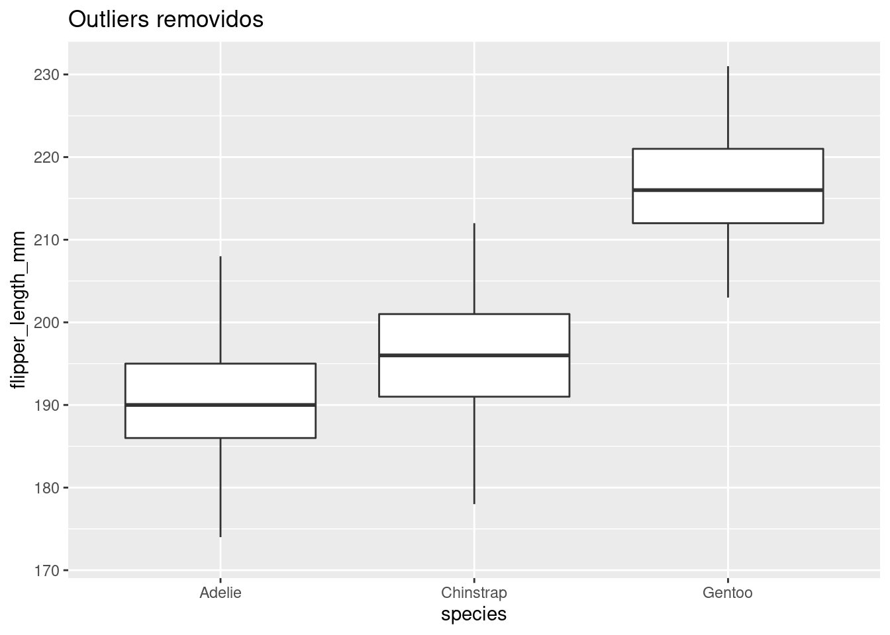
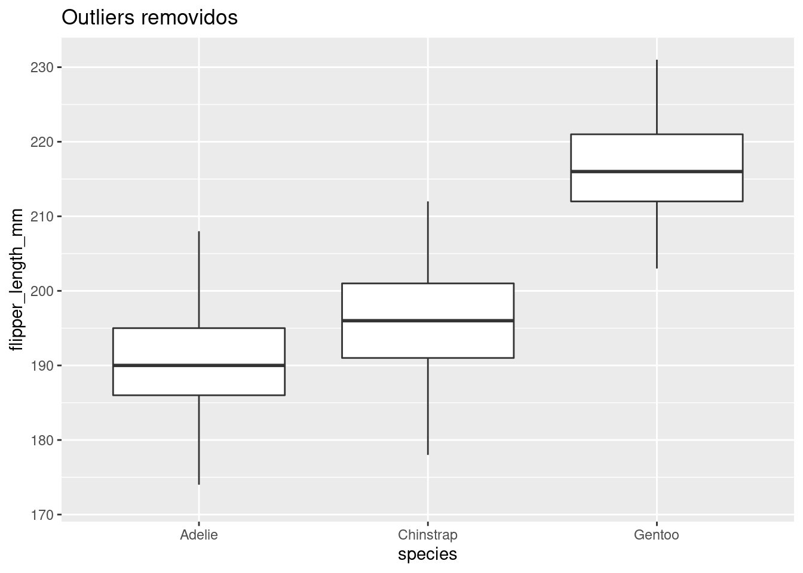
Figura 6.25: Gráfico de caixa para a variável comprimento_nadadeira para cada espécie de pinguim, destacando e removendo os outliers.
Outra opção para os gráficos do tipo boxplot é utilizar o argumento notch = TRUE para produzir diagramas de caixa entalhados (notched). Estes diagramas são úteis para inferir de forma aproximada se existe diferença significativa entre as médias dos grupos (Figura 6.26).
## Gráfico com caixa entalhadas
ggplot(data = penguins, aes(y = comprimento_nadadeira, x = especies)) +
geom_boxplot(notch = TRUE) +
labs(title = "Caixas entalhadas")
Figura 6.26: Gráfico de caixa para a variável comprimento_nadadeira para cada espécie de penguim, com entalhamentos.
Comparando múltiplas categorias
No exemplo abaixo, utilizamos cores diferentes para ilustrar espécies diferentes através do argumento fill = especies (Figura 6.27).
## Modificando o preenchimento
ggplot(data = penguins,
aes(y = comprimento_nadadeira, x = especies, fill = especies)) +
geom_boxplot()
Figura 6.27: Gráfico de caixa para a variável comprimento_nadadeira para cada espécie de pinguim, com preenchimentos diferentes.
Combinando boxplot com pontos (jitter)
Podemos ainda acrescentar pontos para mostrar a distribuição dos dados, fazendo uma “agitação” (jitter) dos pontos sobre as caixas (Figura 6.28).
## Boxplot com jitters
ggplot(data = penguins, aes(y = comprimento_nadadeira,
x = especies,
fill = especies)) +
geom_boxplot() +
geom_jitter(size = .5)
Figura 6.28: Gráfico de caixa para a variável comprimento_nadadeira para cada espécie de penguim, com distribuição dos dados.
Gráfico de violino (violin plot) como alternativa ao boxplot
Além das caixas no boxplot, podemos utilizar o formato de “violino” (gráfico de violino) para representar a variação dos dados contínuos para as categorias. A informação adicional ao boxplot que o gráfico de violino permite visualizar é a densidade e distribuição dos pontos, assim como apresentamos acima no gráfico de densidades geom_density(). A diferença é que a densidade é espelhada e, desse modo, podemos visualizar os intervalores dos dados com maior ou menor concentração de valores (Figura 6.29).
## Gráfico de violino
ggplot(data = penguins, aes(y = comprimento_nadadeira, x = especies, fill = especies)) +
geom_violin() +
geom_jitter(size = .5)
Figura 6.29: Gráfico de violino para a variável comprimento_nadadeira para cada espécie de penguim, com distribuição dos dados.
É possível também combinar boxplot e gráfico de violino em um único gráfico (Figura 6.30).
## Combinando o gráfico de violino com o de caixas
ggplot(data = penguins, aes(y = comprimento_nadadeira, x = especies, fill = especies)) +
geom_violin() +
geom_boxplot(width = .1, fill = "gray")
Figura 6.30: Gráfico de caixa e de violino para a variável comprimento_nadadeira para cada espécie de penguim.
Ajustes finos (versão personalizada)
## Gráfico de caixas exemplo
ggplot(data = penguins, aes(x = especies, y = comprimento_nadadeira, fill = especies)) +
geom_boxplot(width = .5, show.legend = FALSE) +
scale_fill_manual(values = c("darkorange", "purple", "cyan4")) +
theme_bw(base_size = 14) +
labs(title = "Boxplot sem pontos", x = "Espécies", y = "Comprimento da nadadeira (mm)")
## Gráfico de violino exemplo
ggplot(data = penguins, aes(x = especies, y = comprimento_nadadeira, fill = especies)) +
geom_violin(width = .5, show.legend = FALSE) +
geom_jitter(alpha = .4, show.legend = FALSE,
position = position_jitter(width = .15, seed = 0)) +
scale_fill_manual(values = c("darkorange", "purple", "cyan4")) +
theme_bw(base_size = 14) +
labs(title = "Gráfico de violino com jitter", x = "Espécies", y = "Comprimento da nadadeira (mm)")
## Gráfico de caixas e violino exemplo
ggplot(data = penguins, aes(x = especies, y = comprimento_nadadeira, fill = especies)) +
geom_violin(width = .5, show.legend = FALSE) +
geom_boxplot(width = .3, fill = "gray", show.legend = FALSE) +
scale_fill_manual(values = c("darkorange", "purple", "cyan4")) +
theme_bw(base_size = 14) +
labs(title = "Gráfico de violino com boxplot", x = "Espécies", y = "Comprimento da nadadeira (mm)") 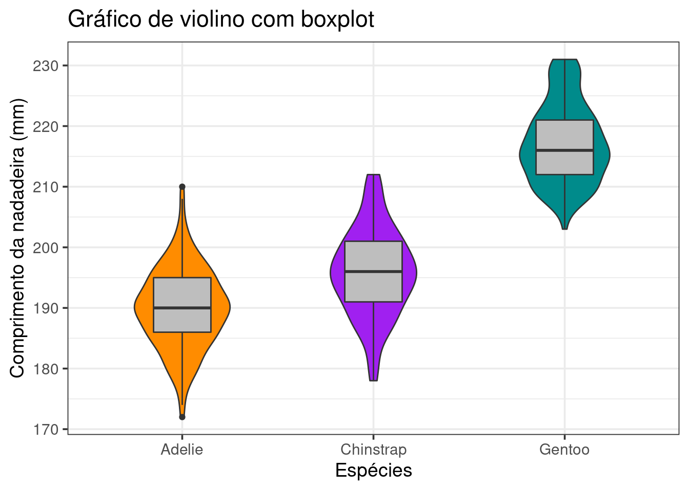
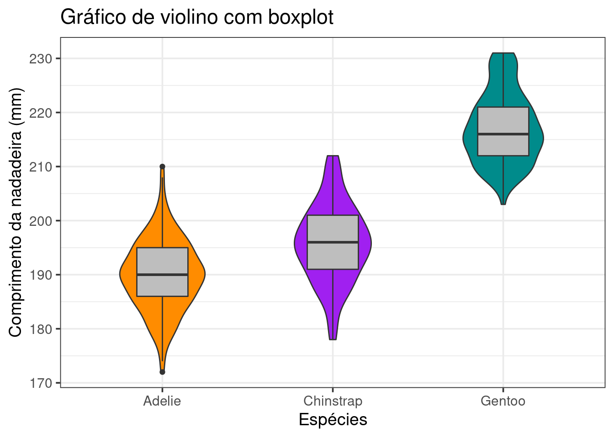
Figura 6.31: Gráfico de caixa, violino, e caixa e violino para a variável comprimento_nadadeira para cada espécie de penguim, com ajustes finos.
Principais camadas utilizadas no geom_boxplot() e geom_violin()
aes()- Eixo X (
x): variável categórica (especies) - Eixo Y (
y): variável contínua (comprimento_nadadeira) - Preenchimento (
fill): a variável categórica (especies) define a cor do preenchimento e os níveis dentro desta categoria determinam o número de cores que devem ser indicadas noscale_fill_manual(). geom():-
geom_boxplot(): para que as variáveis contínuas e categóricas sejam plotadas como gráficos de caixas ou violinos -
width: largura das barras ou dos pontos(valor padrão: width = 1) -
fill: pode definir uma cor padrão (caso não tenha utilizado o fill dentro do argumentoaes()) comofill = "gray" -
notch: para utilizar a caixa entalhada o argumento deve sernotch = TRUE, a escolha padrão da funçãogeom_boxplot()énotch = FALSE -
geom_violin(): assim como nas outras formas geométricas, é possível controlar largura, cor, preenchimento e transparências dos violinos -
geom_jitter(): esta função basicamente “agita” aleatoriamente os pontos para evitar a sobreposição de valores idênticos. Esta função produz a mesma representação se usar a funçãogeom_point(position = "jitter") scale()-
scale_fill_manual(): para definir manualmente as cores de preferência do usuário theme()-
theme_bw(): para selecionar o tema com fundo branco -
labs(): para personalizar os títulos dos eixos X e Y, e da legenda
6.4.7 Gráfico de dispersão (scatter plot)
O gráfico de dispersão (em inglês, scatter plot) é famoso na Ecologia por ser a visualização preferida para representar a relação entre área e riqueza de espécies. Neste gráfico, os eixos X e Y são representados por variáveis contínuas. Em especial, os gráficos de dispersão são usados para representar os resultados testados por análises estatísticas como regressão linear, ANCOVA, mantel, PCA, PCoA, nMDS entre outros (para mais detalhes, consultar os Capítulos 7, 8 e 9).
Versão padrão
Vamos utilizar o conjunto de dados palmerpenguins para construir um gráfico de dispersão relacionando as variáveis comprimento_bico e comprimento_nadadeira com a função geom_point(). Esta função utiliza variável contínuas no eixo X e no Y. O gráfico mostra os pares ordenados das medidas das duas variáveis (Figura 6.32).
## Gráfico de dispersão das coluna comprimento_nadadeira e comprimento_bico
ggplot(data = penguins, aes(x = comprimento_bico, y = comprimento_nadadeira)) +
geom_point()
Figura 6.32: Gráfico de dispersão relacionando as variáveis comprimento_bico e comprimento_nadadeira.
Definindo a cor, tamanho, forma e preenchimento dos pontos
Da mesma forma que para os outros gráficos, podemos alterar cor, tamanho, forma e preenchimento dos pontos (Figura 6.33).
## Cor e tamanho dos pontos
ggplot(data = penguins, aes(x = comprimento_bico, y = comprimento_nadadeira)) +
geom_point(color = "cyan4", size = 4) +
labs(title = "Sem transparência")
## Cor, tamanho dos pontos e transparência
ggplot(data = penguins, aes(x = comprimento_bico, y = comprimento_nadadeira)) +
geom_point(color = "cyan4", size = 4, alpha = .4) +
labs(title = "Com transparência")
Figura 6.33: Gráfico de dispersão relacionando as variáveis comprimento_bico e comprimento_nadadeira para cada espécie de penguim, com alterações na cor, tamanho e preenchimento dos pontos.
A forma dos pontos permite dois controles importantes: a forma em si (símbolos como círculo, quadrado, etc.) e a possibilidade de preenchimento da forma. A figura a seguir discrimina esses símbolos e o valor que deve ser utilizado para desenhar a forma preferida. É importante notar que os símbolos 21 a 25 possuem dois argumentos: (i) cor (que, na verdade, é a cor da borda do símbolo) e (ii) a cor que define o preenchimento do símbolo. O tipo de símbolo é definido pelo argumento shape (Figura 6.34).
Figura 6.34: Tipos de símbolos disponíveis para representar pontos.
Assim, é possível controlar cores, formas e preenchimento combinado os argumentos shape, fill e color com a função scale_manual(). É importante notar que para os símbolos entre 15 e 20 só podemos controlar o argumento cor, enquanto os símbolos entre 21 e 25 podemos controlar a cor e o preenchimento (Figura 6.35).
## Formato e tamanho
ggplot(data = penguins, aes(x = comprimento_bico, y = comprimento_nadadeira)) +
geom_point(shape = 1, size = 4)
## Formato e tamanho para espécies
ggplot(data = penguins, aes(x = comprimento_bico, y = comprimento_nadadeira, color = especies)) +
geom_point(shape = 19, size = 4)
## Formato e tamanho e cor
ggplot(data = penguins, aes(x = comprimento_bico, y = comprimento_nadadeira, fill = especies)) +
geom_point(shape = 21, size = 4, color = "black") 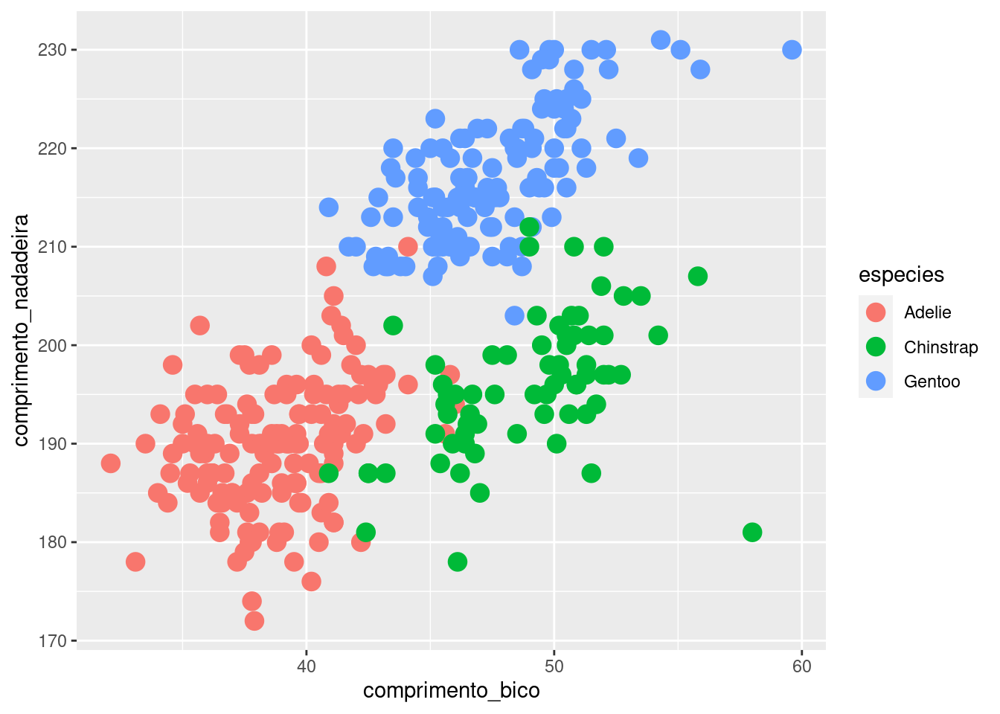
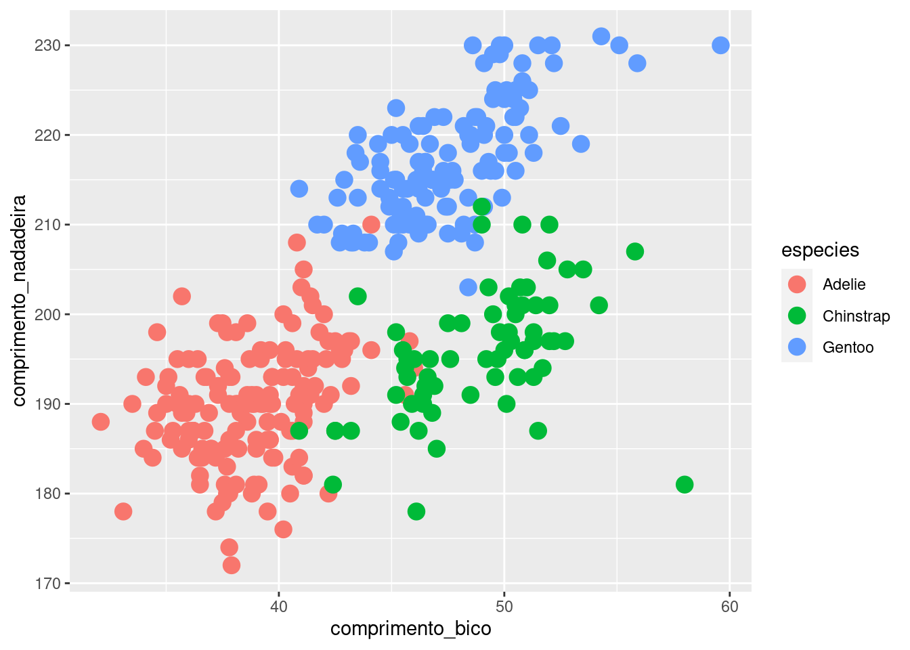
Figura 6.35: Gráfico de dispersão relacionando as variáveis comprimento_bico e comprimento_nadadeira para cada espécie de penguim, com alterações no formato.
Definindo linhas de ajuste
Quando usamos modelos estatísticos como, por exemplo, lm(), glm(), gam(), entre outros (veja mais nos Capítulos 7 e 8), podemos utilizar os valores preditos para demonstrar a relação entre as variáveis X e Y. No ggplot2, a função geom_smooth() faz esse ajuste com certa simplicidade (Figura 6.36).
## Linha de ajuste
ggplot(data = penguins, aes(x = comprimento_bico, y = comprimento_nadadeira)) +
geom_point(shape = 20, size = 4, color = "black") +
geom_smooth(method = lm)
Figura 6.36: Gráfico de dispersão relacionando as variáveis comprimento_bico e comprimento_nadadeira para cada espécie de penguim, com linhas de ajustes estatísticos.
Ajustes finos (versão personalizada)
## Gráfico de dispersão exemplo
ggplot(data = penguins, aes(x = comprimento_bico, y = comprimento_nadadeira,
color = especies, shape = especies)) +
geom_point(size = 4, alpha = .7) +
geom_smooth(method = "lm", se = FALSE) +
scale_shape_manual(values = c(19, 15, 17)) +
scale_color_manual(values = c("darkorange", "purple", "cyan4")) +
theme_bw(base_size = 16) +
labs(x = "Comprimento do bico (mm)", y = "Comprimento da nadadeira (mm)",
color = "Espécies", shape = "Espécies")
Figura 6.37: Gráfico de dispersão relacionando as variáveis comprimento_bico e comprimento_nadadeira para cada espécie de penguim, com ajustes finos.
Além disso, podemos relacionar dados não tão usuais. Recomendamos a leitura do artigo de Matejka & Fitzmaurice (2017) que apresenta as armadilhas típicas que dados podem gerar quando evitamos de visualizá-los previamente (Figura 6.38).
## Gráfico do dinossauro
datasaurus_dozen %>%
dplyr::filter(dataset == "dino") %>%
ggplot() +
aes(x = x, y = y) +
geom_point(colour = "black", fill = "black",
size = 4, alpha = .7, shape = 21) +
theme_bw() +
theme(axis.title = element_text(size = 24),
axis.text.x = element_text(size = 20),
axis.text.y = element_text(size = 20))
Figura 6.38: Gráfico de dispersão relacionando as variáveis x e y formando um dinossauro.
6.4.8 Visualização de múltiplos gráficos pareados
Muitas vezes precisamos plotar a relação de mais de uma variável, e muitas vezes essas variáveis são de mais de um tipo (contínua, categórica, etc.). O gráfico mais indicado nesses casos é o gráfico pareado (Emerson et al. 2013) que nos auxilia à ter uma visão geral do conjunto de dados e de suas interrelações. Esse gráfico também é chamado de pairs plot ou correlograma.
Gráfico pareado com variáveis contínuas
A função ggpairs()do pacote GGally permite criar múltiplos gráficos pareados comparando as variáveis contínuas no seu conjunto de dados. Além de demonstrar gráficos de dispersão de cada par de variáveis, ela apresenta gráficos de densidade de cada variável individualmente e, além disso, os valores de correlação entre os pares analisados com ou sem uma potencial variável categórica (neste caso, especies) (Figura 6.39).
## Gráfico pareado com variáveis contínuas
penguins %>%
dplyr::select(massa_corporal, comprimento_bico, profundidade_bico, comprimento_nadadeira) %>%
GGally::ggpairs(aes(color = penguins$especies)) +
scale_colour_manual(values = c("darkorange", "purple", "cyan4")) +
scale_fill_manual(values = c("darkorange", "purple", "cyan4")) +
theme_bw()
Figura 6.39: Gráfico pareado relacionando várias variáveis contínuas para as espécies de penguins.
Gráfico pareado com vários tipos de variáveis
Como alternativa, a função ggpairs() permite também incluir variáveis categóricas nas comparações. Neste caso, ela reconhece o tipo de gráfico (boxplot, dispersão, etc.) a partir dos modos das variáveis (Figura 6.40).
## Gráfico pareado com variáveis contínuas e categóricas
penguins %>%
dplyr::select(sexo, massa_corporal, comprimento_bico, profundidade_bico, comprimento_nadadeira) %>%
GGally::ggpairs(aes(color = sexo)) +
scale_colour_manual(values = c("darkorange", "purple", "cyan4")) +
scale_fill_manual(values = c("darkorange", "purple", "cyan4")) +
theme_bw()
Figura 6.40: Gráfico pareado relacionando várias variáveis contínuas e categóricas para as espécies de penguins.
6.4.9 Erros comuns dos usuários do ggplot2 e como evitá-los
Abaixo, apresentamos uma lista não exaustiva dos erros mais comuns que cometemos (e vimos muitos usuários cometerem) ao fazer gráficos no ggplot2.
Utilizar ajuste manual nas funções
scale_shape_manual(),scale_color_manual()ouscale_fill_manual()sem indicar no argumentoaes()as variáveis que devem definir cada um desses elementos gráficosUtilizar ajuste manual na função
scale_size_manual()indicando uma variável categórica em vez de numéricaNúmero de cores indicadas como valores no
scale_fill_manual()ouscale_color_manual(): ao definir as cores de maneira personalizada (ou seja, não usando o padrão da função) é muito comum utilizarmos o número de cores usados por algum tutorial ou livro. Com frequência, o exemplo seguido e seus dados não possuem o mesmo número de cores dos nossos dados. Deste modo, você pode usar códigos no R para ajudar a quantificar o número de cores necessárias. Por exemplo, para os dadospenguins, o código a seguir indica o número de cores necessárias:length(levels(penguins\$species)). Assim, será necessário indicar três cores diferentes dentro da funçãoscale_*().Função
geom_smooth(): como falado, a funçãogeom_smooth()é muito útil (e simples) para gerar as linhas de ajuste (best fit) típicas de modelos lineares e não lineares. Porém, fique alerta ao usar, por exemplo,geom_smooth(method = lm), o modelo linear utilizado para testar sua predição foi olm(). Se tiver utilizadoglm()ougam()o ajuste deve ser produzido a partir desses modelos.Uso incorreto do modo das variáveis: neste caso, o usuário utilizar uma variável numérica (por exemplo, 1, 2 e 3) como variável categórica. Neste caso, é preciso transformar a variável numérica em variável categóricas (antes de fazer o ggplot2 ou dentro do
aes()).
Veja exemplos (Figura 6.41).
## Figura incorreta, sem a transformação da variável ano
penguins %>%
ggplot(aes(x = ano, y = comprimento_bico)) +
geom_boxplot() +
theme_bw() +
labs(title = "Figura incorreta")
## Figura correta, com transformação interna da variável ano
penguins %>%
ggplot(aes(x = factor(ano), y = comprimento_bico)) +
geom_boxplot() +
theme_bw() +
labs(title = "Figura correta com transformação interna")
## Figura correta, com transformação prévia da variável ano
penguins %>%
mutate(ano_f = as.factor(ano)) %>%
ggplot(aes(x = ano_f, y = comprimento_bico)) +
geom_boxplot() +
theme_bw() +
labs(title = "Figura correta com transformação prévia") 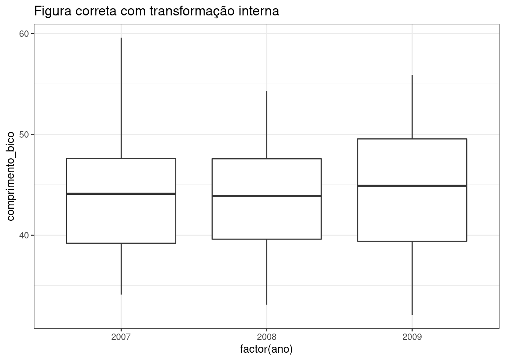
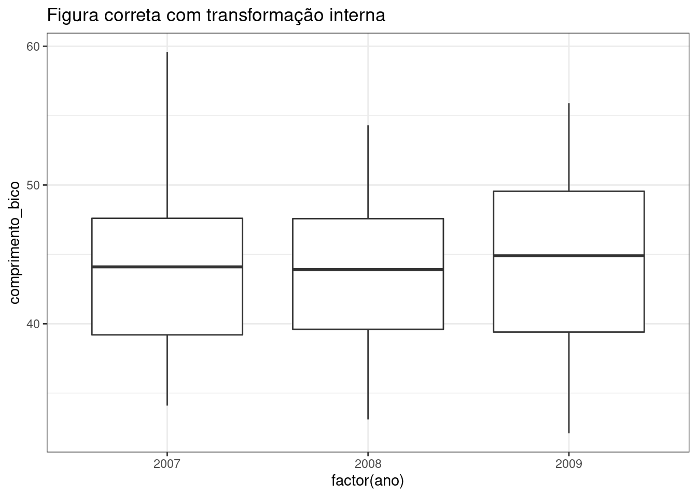
Figura 6.41: Gráficos mostrando erros comuns na criação de gráficos no pacote ggplot2.
6.5 Finalização de gráficos para publicação
6.5.1 Posição, cores e fonte da legenda
É possível controlar a posição, cores e fonte da legenda em diversos locais com alguns argumentos dentro da função theme():
legend.position: controla a posição na área do gráfico:top,right,bottom,leftounone. Além disso, é possível inserir a legenda internamento no gráfico indicando as posições nos eixos X e Ylegend.box: determina as características do retângulo onde a legenda é inserida:legend.box.background(combinado comelement_rect()) elegend.box.margin(combinado commargin())legend.text: controla a cor e tamanho da legenda (as duas informações devem ser inseridas dentro da funçãoelement_text())legend.title: personaliza a cor e tamanho da legenda também dentro da funçãoelement_text()
Vejamos alguns exemplos (Figura 6.42).
## Legenda acima
ggplot(data = penguins,
aes(x = comprimento_bico, y = comprimento_nadadeira,
color = especies, shape = especies)) +
geom_point(size = 4, alpha = .7) +
geom_smooth(method = "lm", se = FALSE) +
scale_shape_manual(values = c(19, 15, 17)) +
scale_color_manual(values = c("darkorange", "purple", "cyan4")) +
theme_bw(base_size = 14) +
theme(legend.position = "top") +
labs(title = "Legenda acima do gráfico", x = "Comprimento do bico (mm)",
y = "Profundidade do bico (mm)", color = "Espécies", shape = "Espécies")
## Leganda abaixo
ggplot(data = penguins,
aes(x = comprimento_bico, y = comprimento_nadadeira,
color = especies, shape = especies)) +
geom_point(size = 4, alpha = .7) +
geom_smooth(method = "lm", se = FALSE) +
scale_shape_manual(values = c(19, 15, 17)) +
scale_color_manual(values = c("darkorange", "purple", "cyan4")) +
theme_bw(base_size = 14) +
theme(legend.position = "bottom") +
labs(title = "Legenda abaixo do gráfico", x = "Comprimento do bico (mm)",
y = "Profundidade do bico (mm)", color = "Espécies", shape = "Espécies")
## Sem legenda
ggplot(data = penguins,
aes(x = comprimento_bico, y = comprimento_nadadeira,
color = especies, shape = especies)) +
geom_point(size = 4, alpha = .7) +
geom_smooth(method = "lm", se = FALSE) +
scale_shape_manual(values = c(19, 15, 17)) +
scale_color_manual(values = c("darkorange", "purple", "cyan4")) +
theme_bw(base_size = 14) +
theme(legend.position = "none") +
labs(title = "Sem legenda", x = "Comprimento do bico (mm)",
y = "Profundidade do bico (mm)", color = "Espécies", shape = "Espécies")
## Legenda personalizada
ggplot(data = penguins,
aes(x = comprimento_bico, y = comprimento_nadadeira,
color = especies, shape = especies)) +
geom_point(size = 4, alpha = .7) +
geom_smooth(method = "lm", se = FALSE) +
scale_shape_manual(values = c(19, 15, 17)) +
scale_color_manual(values = c("darkorange", "purple", "cyan4")) +
theme_bw(base_size = 14) +
theme(legend.position = "right",
legend.text = element_text(size = 14, colour = "red"),
legend.title = element_text(face = "bold"),
legend.box.background = element_rect(color="red", size=2),
legend.margin = margin(6, 6, 6, 6)) +
labs(title = "Legenda personalizada", x = "Comprimento do bico (mm)",
y = "Profundidade do bico (mm)", color = "Espécies", shape = "Espécies")
## Legenda interna
ggplot(data = penguins,
aes(x = comprimento_bico, y = comprimento_nadadeira,
color = especies, shape = especies)) +
geom_point(size = 4, alpha = .7) +
geom_smooth(method = "lm", se = FALSE) +
scale_shape_manual(values = c(19, 15, 17)) +
scale_color_manual(values = c("darkorange", "purple", "cyan4")) +
theme_bw(base_size = 16) +
theme(legend.position = c(.2, .8),
legend.title = element_blank(),
legend.key = element_blank(),
legend.background = element_blank(),
legend.text = element_text(size = 12, face = "bold")) +
labs(title = "Legenda interna", x = "Comprimento do bico (mm)",
y = "Profundidade do bico (mm)", color = "Espécies", shape = "Espécies")
Figura 6.42: Gráficos mostrando a finalização de gráficos para publicação em relação à posição, cores e fonte da legenda no pacote ggplot2.
6.5.2 Elementos gráficos: eixo, fonte, gride
O gráfico padronizado (sem edição extra) geralmente não traz elementos mínimos para publicação em revistas, livros ou periódicos. Além do controle da posição, cor e tamanho da legenda, é fundamental personalizar os seguintes elementos: eixo, fonte e gride.
- Eixos
- Variação: define limites mínimos e máximos para os eixos X (
xlim()) e Y (ylim()) - Intervalo: define o valor intervalo entre os números dos eixos X e Y
Vejamos mais alguns exemplos (Figura 6.43).
## Nome dos eixos
ggplot(data = penguins,
aes(x = comprimento_bico, y = comprimento_nadadeira,
color = especies, shape = especies)) +
geom_point(size = 4, alpha = .4) +
ylim(170, 230) +
xlim(30, 60) +
labs(title = "Nome dos eixos", x = "Eixo X", y = "Eixo Y")
## Intervalo dos eixos
ggplot(data = penguins,
aes(x = comprimento_bico, y = comprimento_nadadeira,
color = especies, shape = especies)) +
geom_point(size = 4, alpha = .4) +
scale_x_continuous(limits = c(30, 60), breaks = seq(30, 60, 2)) +
labs(title = "Intervalo dos eixos", x = "Eixo X", y = "Eixo Y")
Figura 6.43: Gráficos mostrando a finalização de gráficos para publicação em relação aos elementos gráficos de eixo, fonte e gride no pacote ggplot2.
- Fonte dos eixos X e Y
- Tipo
- Tamanho
- Cor
- Face (itálico, negrito, etc.)
- Ângulo
Vejamos outros exemplos com mudanças nos eixos (Figura 6.44).
## Cor e fonte dos eixos
ggplot(data = penguins,
aes(x = comprimento_bico, y = comprimento_nadadeira,
color = especies, shape = especies)) +
geom_point(size = 4, alpha = .4) +
theme(axis.title.x = element_text(face = "bold", size = 20, colour = "cyan4"),
axis.text.x = element_text(size = 14),
axis.title.y = element_text(face = "bold", size = 20, colour = "cyan4"),
axis.text.y = element_text(size = 14)) +
labs(title = "Cor e fonte dos eixos", x = "Eixo X", y = "Eixo Y")
## Intervalo e ângulos do texto dos eixos
ggplot(data = penguins,
aes(x = comprimento_bico, y = comprimento_nadadeira,
color = especies, shape = especies)) +
geom_point(size = 4, alpha = .4) +
scale_x_continuous(limits = c(20, 60), breaks = seq(20, 60, 2)) +
theme(axis.title.x = element_text(face = "bold", size = 20, colour = "cyan4"),
axis.text.x = element_text(size = 14, angle = 45),
axis.title.y = element_text(face = "bold", size = 20, colour = "cyan4"),
axis.text.y = element_text(size = 14)) +
labs(title = "Intervalo e ângulos do texto dos eixos", x = "Eixo X", y = "Eixo Y") 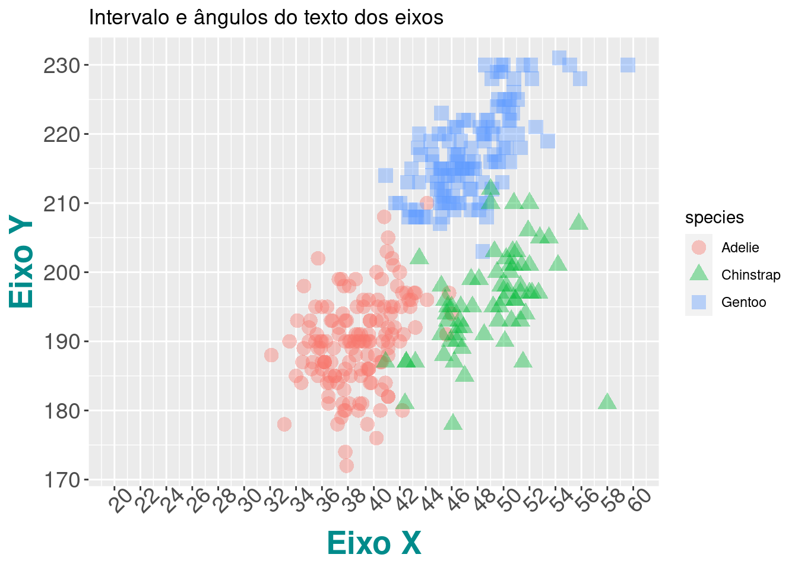
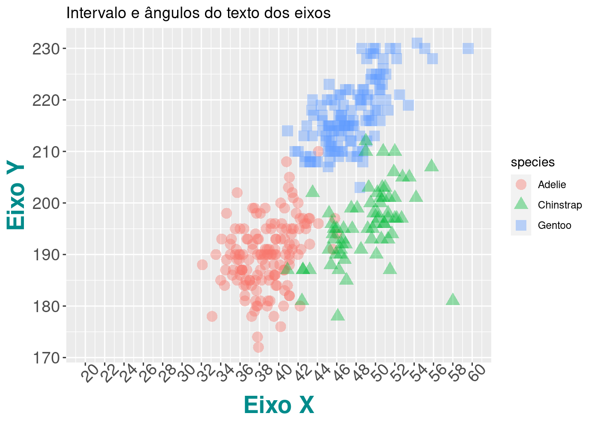
Figura 6.44: Gráficos mostrando a finalização de gráficos para publicação em relação aos eixos no pacote ggplot2.
- Gride
- Linhas de grade principais (
panel.grid.major) - Linhas de grade secundárias (
panel.grid.minor) - Borda do gráfico (
panel.border)
Vejamos outros exemplos com mudanças ao gride (Figura 6.45).
## Linhas de grade principais
ggplot(data = penguins,
aes(x = comprimento_bico, y = comprimento_nadadeira,
color = especies, shape = especies)) +
geom_point(size = 4, alpha = .4) +
scale_x_continuous(limits = c(30, 60), breaks = seq(30, 60, 5)) +
theme(axis.title.x = element_text(face = "bold", size = 16),
axis.text.x = element_text(size = 12),
axis.title.y = element_text(face = "bold", size = 16),
axis.text.y = element_text(size = 12),
panel.grid.minor = element_blank()) +
labs(title = "Linhas de grade principais", x = "Eixo X", y = "Eixo Y")
## Retirar linhas de grade
ggplot(data = penguins,
aes(x = comprimento_bico, y = comprimento_nadadeira,
color = especies, shape = especies)) +
geom_point(size = 4, alpha = .4) +
scale_x_continuous(limits = c(30, 60), breaks = seq(30, 60, 5)) +
theme(axis.title.x = element_text(face = "bold", size = 16),
axis.text.x = element_text(size = 12),
axis.title.y = element_text(face = "bold", size = 16),
axis.text.y = element_text(size = 12),
panel.grid.minor = element_blank(),
panel.grid.major = element_blank()) +
labs(title = "Retirar linhas de grade", x = "Eixo X", y = "Eixo Y")
## Borda do gráfico
ggplot(data = penguins,
aes(x = comprimento_bico, y = comprimento_nadadeira,
color = especies, shape = especies)) +
geom_point(size = 4, alpha = 0.5) +
scale_x_continuous(limits = c(30, 60), breaks = seq(30, 60, 5)) +
theme(axis.title.x = element_text(face = "bold", size = 16),
axis.text.x = element_text(size = 12),
axis.title.y = element_text(face = "bold", size = 16),
axis.text.y = element_text(size = 12),
panel.grid.minor = element_blank(),
panel.grid.major = element_blank(),
panel.border = element_rect(size = 2, colour = "black", fill = NA)) +
labs(title = "Borda do gráfico", x = "Eixo X", y = "Eixo Y")
## Borda do gráfico
ggplot(data = penguins,
aes(x = comprimento_bico, y = comprimento_nadadeira,
color = especies, shape = especies)) +
geom_point(size = 4, alpha = .4) +
scale_x_continuous(limits = c(30, 60), breaks = seq(30, 60, 5)) +
theme(axis.title.x = element_text(face = "bold", size = 16),
axis.text.x = element_text(size = 12),
axis.title.y = element_text(face = "bold", size = 16),
axis.text.y = element_text(size = 12),
panel.grid.minor = element_blank(),
panel.grid.major = element_blank(),
axis.line = element_line(size = 1)) +
labs(title = "Borda do gráfico", x = "Eixo X", y = "Eixo Y") 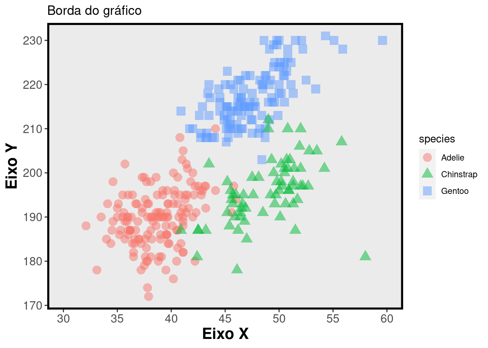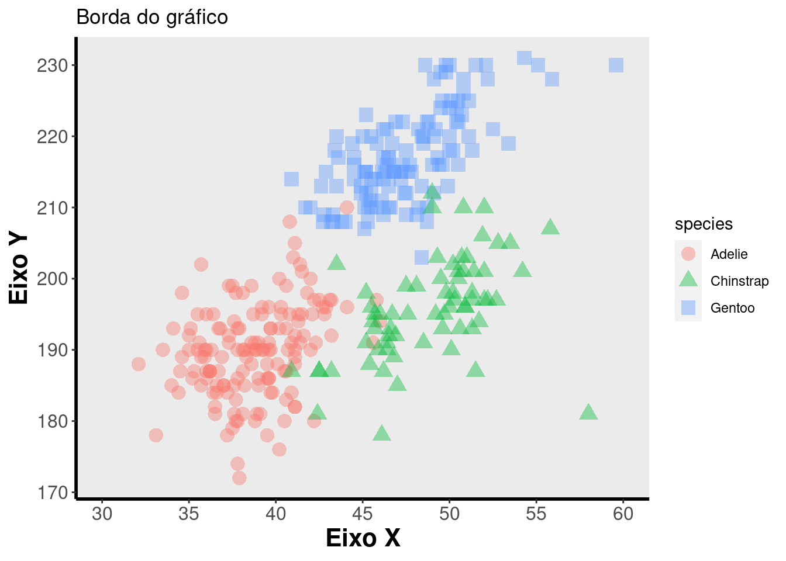
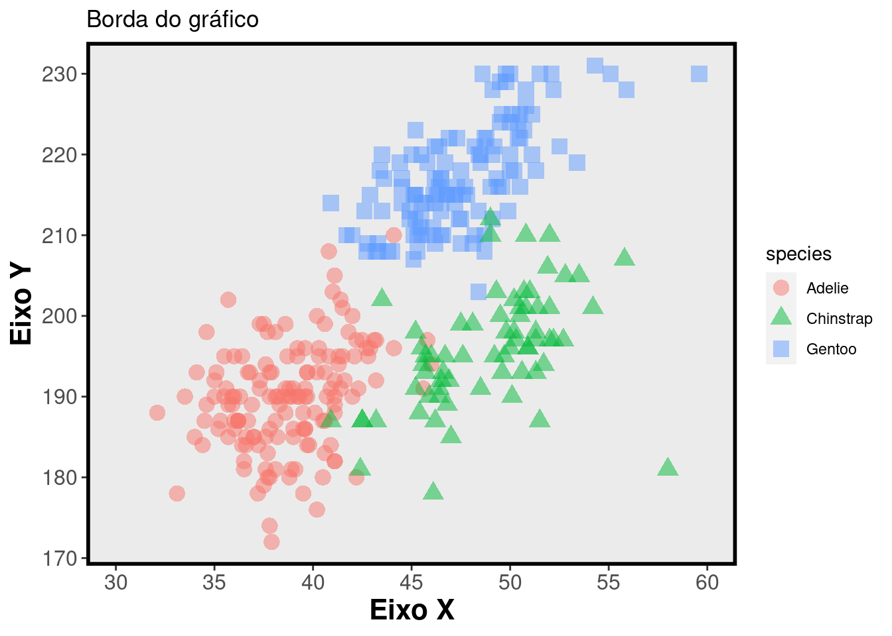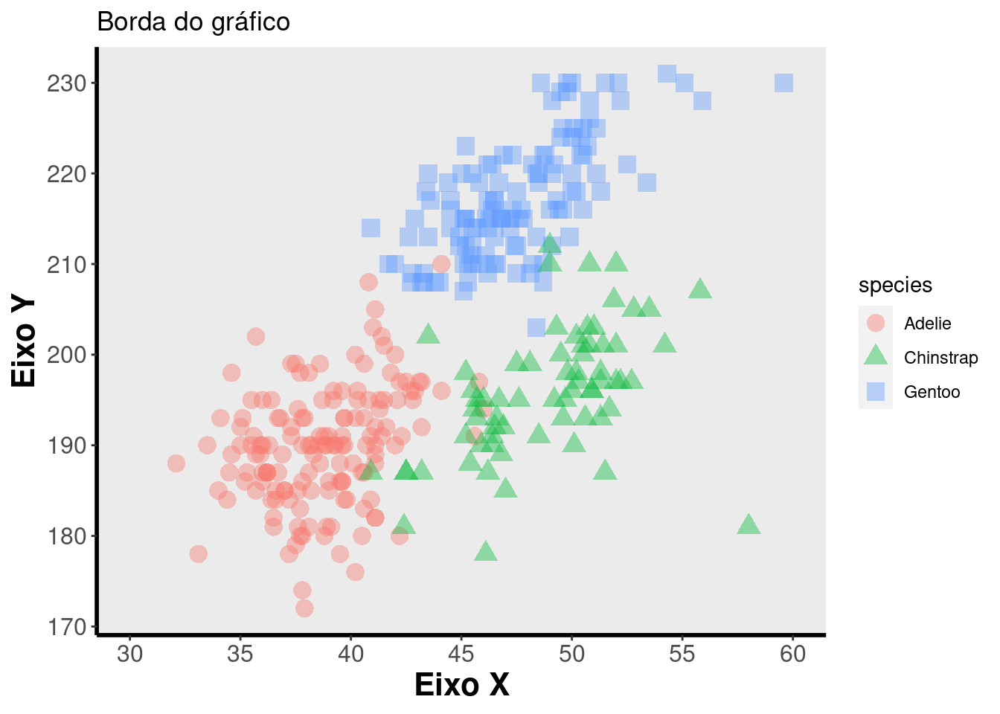
Figura 6.45: Gráficos mostrando a finalização de gráficos para publicação em relação ao gride no pacote ggplot2.
6.5.3 Temas personalizados ggtheme()
Existem vários temas criados dentro do universo ggtheme() que podem facilitar a escolha de um modelo com ótima qualidade para publicação. Abaixo, demonstramos os modelos mais utilizados (Figura 6.46).
## theme_gray
ggplot(data = penguins,
aes(x = comprimento_bico, y = comprimento_nadadeira,
color = especies, shape = especies)) +
geom_point(size = 4, alpha = .7) +
geom_smooth(method = "lm", se = FALSE) +
scale_shape_manual(values = c(19, 15, 17)) +
scale_color_manual(values = c("darkorange", "purple", "cyan4")) +
theme_gray(base_size = 16) +
labs(title = "theme_gray()", x = "Comprimento do bico (mm)",
y = "Profundidade do bico (mm)", color = "Espécies", shape = "Espécies")
## theme_bw()
ggplot(data = penguins,
aes(x = comprimento_bico, y = comprimento_nadadeira,
color = especies, shape = especies)) +
geom_point(size = 4, alpha = .7) +
geom_smooth(method = "lm", se = FALSE) +
scale_shape_manual(values = c(19, 15, 17)) +
scale_color_manual(values = c("darkorange", "purple", "cyan4")) +
theme_bw(base_size = 16) +
labs(title = "theme_bw()", x = "Comprimento do bico (mm)",
y = "Profundidade do bico (mm)", color = "Espécies", shape = "Espécies")
## theme_classic()
ggplot(data = penguins,
aes(x = comprimento_bico, y = comprimento_nadadeira,
color = especies, shape = especies)) +
geom_point(size = 4, alpha = .7) +
geom_smooth(method = "lm", se = FALSE) +
scale_shape_manual(values = c(19, 15, 17)) +
scale_color_manual(values = c("darkorange", "purple", "cyan4")) +
theme_classic(base_size = 16) +
labs(title = "theme_classic()", x = "Comprimento do bico (mm)",
y = "Profundidade do bico (mm)", color = "Espécies", shape = "Espécies") 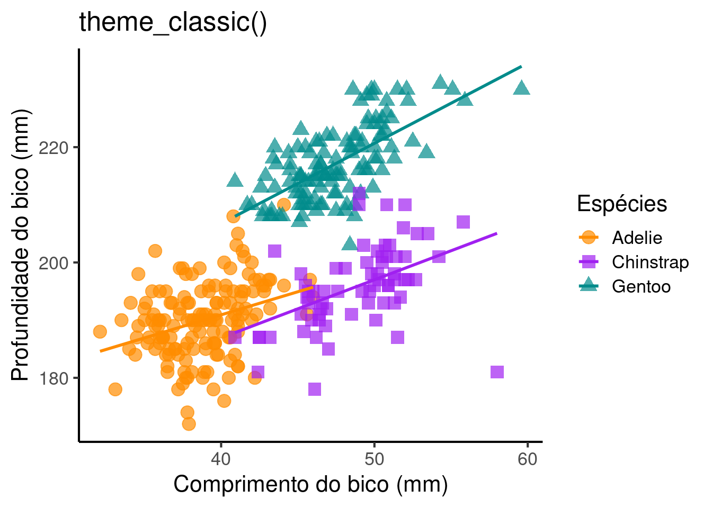
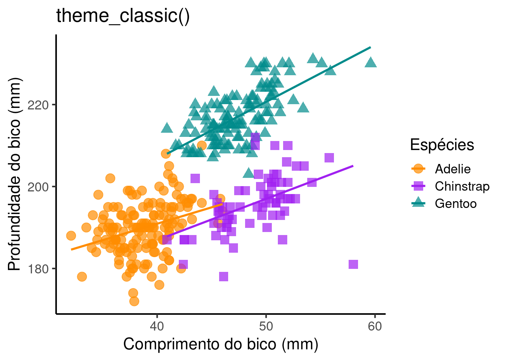
Figura 6.46: Gráficos mostrando a finalização de gráficos para publicação em relação ao ggtheme() no pacote ggplot2.
6.5.4 Criando seu próprio theme_custom()
Por fim, é possível criar um tema personalizado como uma função. Assim, o usuário pode controlar todos os elementos gráficos em um único código. O maior benefício de personalizar uma função é que não será necessário fazer os ajustes finos em todos os gráficos que tiver construindo, o que pode representar grande economia de tempo e linhas de código (Figura 6.47).
## Criar uma função com os ajustes finos
tema_personalizado <- function(){
# Defina uma fonte
font <- "Times" # Digite names(pdfFonts()) no console do R para ver a lista de fontes disponíveis
theme(
# Defina elementos do gride
panel.grid.major = element_line(colour = "#d3d3d3"),
panel.grid.minor = element_blank(),
axis.ticks = element_blank(),
panel.border = element_rect(colour = "black", fill = NA, size = .5),
# Defina elementos textuais
# Título
plot.title = element_text(
family = font, # Fonte
size = 20, # Tamanho da fonte
face = 'bold', # Tipo de fonte
hjust = 0, # Alinhamento horizontal
vjust = 2), # Alinhamento vertical
# Subtítulo
plot.subtitle = element_text(
family = font, # Fonte
size = 14), # Tamanho da fonte
# Rúbrica
plot.caption = element_text(
family = font, # Fonte
size = 10, # Tamanho da fonte
hjust = 1), # Alinhamento horizontal
# Título dos eixos
axis.title = element_text(
family = font, # Fonte
size = 14), # Tamanho da fonte
# Texto dos eixos
axis.text = element_text(
family = font, # Fonte
size = 14) # Tamanho da fonte
)}
## Gráfico usando a função de tema criada
ggplot(data = penguins,
aes(x = comprimento_bico, y = comprimento_nadadeira,
color = especies, shape = especies)) +
geom_point(size = 4, alpha = .7) +
geom_smooth(method = "lm", se = FALSE) +
scale_shape_manual(values = c(19, 15, 17)) +
scale_color_manual(values = c("darkorange", "purple", "cyan4")) +
tema_personalizado() +
labs(title = "Tema personalizado", x = "Comprimento do bico (mm)",
y = "Profundidade do bico (mm)", color = "Espécies",
shape = "Espécies", caption = "Fonte = palmerpinguins")
Figura 6.47: Gráficos mostrando a finalização de gráficos para publicação em relação à criação de um tema usando o theme_custom() no pacote ggplot2.
6.5.5 Exportando dados com alta qualidade com a função ggsave()
O último passo para construir gráficos com qualidade de publicação é exportar em um formato específico, como .png, .pdf ou .svg (entre outros). A função ggsave() não só permite que você tenha o controle sobre o formato, mas também sobre a qualidade e tamanho desejados com os seguintes argumentos:
-
width: largura do gráfico -
height: altura do gráfico -
units: unidade de medida (cm, mm) do gráfico para definir largura e tamanho -
dpi: resolução ou qualidade da imagem, medida em pontos por polegada (dots per inch) (padrão = 300)
Vejamos um último exemplo (Figura 6.48).
## Gráfico
g1 <- ggplot(data = penguins,
aes(x = comprimento_bico, y = comprimento_nadadeira,
color = especies, shape = especies)) +
geom_point(size = 4, alpha = .7) +
geom_smooth(method = "lm", se = FALSE) +
scale_shape_manual(values = c(19, 15, 17)) +
scale_color_manual(values = c("darkorange", "purple", "cyan4")) +
theme(legend.position = c(.1, .1),
legend.title = element_blank(),
legend.key = element_blank(),
legend.background = element_blank()) +
tema_personalizado() +
labs(x = "Comprimento do bico (mm)", y = "Profundidade do bico (mm)",
color = "Espécies", shape = "Espécies")
g1
Figura 6.48: Gráfico criado para a exportação no pacote ggplot2.
Podemos exportar esse gráfico de diferentes formas.
## Exportar no formato PDF
ggsave(filename = "g1.pdf",
plot = g1,
width = 15,
height = 15,
dpi =300,
units = "cm")
## Exportar no formato PNG
ggsave(filename = "g1.png",
plot = g1,
width = 15,
height = 15,
dpi =300,
units = "cm")
## Exportar no formato SVG
ggsave(filename = "g1.svg",
plot = g1,
width = 15,
height = 15,
dpi =300,
units = "cm")6.6 Para se aprofundar
Listamos a seguir livros e links que recomendamos para seguir com sua aprendizagem em R e gráficos.
6.6.1 Livros
Recomendamos aos interessados os livros: i) Chang (2018) R Graphics Cookbook, ii) Healy (2018) Data Visualization: a practical introduction, iii) Rahlf (2019) Data Visualisation with R: 111 Examples, iv) Sievert (2020) Interactive web-based data visualization with R, plotly, and shiny, v) Wickham (2016) ggplot2: elegant graphics for data analysis, vi) Wilke (2019) Fundamentals of Data Visualization, vii) Wilkinson e colaboradores (2005) The Grammar of Graphics.
6.6.2 Links
Existem centenas de ferramentas online para aprender visualização de dados e ggplot2. Tais ferramentas são bastante variadas, incluindo desde a escolha de tipos de gráficos à seleção de cores. Dentre elas, indicamos os seguintes links em inglês:
Visualização - Data Visualization with R - Rob Kabacoff - The Data Visualisation Catalogue - The R Graph Gallery - From Data to Viz - Data Viz Project - QuickChart - Chart.js - drawdata.xyz
Seleção de cores (paletas) - Color Brewer: color advice - Wes Anderson Palletes - Choosing colors for data visualization
6.7 Exercícios
6.1
Utilizando o banco de dados penguins compare o comprimento do bico entre as diferentes espécies de penguins. Utilize um gráfico de caixa (boxplot) para ilustrar a variação intraespecífica e possíveis outliers nos dados. Para melhorar o seu gráfico, lembre-se de nomear os dois eixos corretamente, definir um tema e posicionar a legenda.
6.2
Utilizando o banco de dados penguins faça um histograma com a distribuição da massa corporal para cada uma das espécies. Utilize uma cor de preenchimento para cada espécie.
6.3
Utilizando o banco de dados penguins, faça três gráficos com o mesmo eixo Y e eixo X. Coloque o comprimento das nadadeiras no eixo Y e as espécies de pinguins no eixo X. No primeiro gráfico, utilize o geom_jitter() para plotar os dados brutos. No segundo gráfico, utilize o geom_violin() para mostrar a distribuição de densidade dos dados. No terceiro gráfico, utilize o geom_boxplot() para destacar a mediana e os quartis.
6.4
Se você conseguiu resolver o exercício 6.3, agora dê um passo a mais e compare os três gráficos lado a lado utilizando a função grid.arrange(). Lembre-se de colocar um título informativo em cada um dos gráficos antes de juntá-los em uma prancha única. Ao comparar os três tipos de gráficos, qual você considera mais informativo? Experimente combinar mais de um “geom” (camadas) e produzir gráficos ainda mais interessantes.
6.5
Utilize o conjunto de dados ecodados::anova_dois_fatores para construir um gráfico de barras com a média e o erro padrão do Tempo (Tempo para eliminar a droga do corpo) no eixo Y em função da variável Pessoas (XX, ou XY) e Idade (jovem ou idoso). Antes de fazer o gráfico leia com atenção a descrição do mesmo através do comando ?ecodados::anova_dois_fatores. Uma dica, utilize fill dentro do aes() para representar um dos fatores (ex. Pessoas). O outro fator você pode representar no eixo X. Veja se consegue, se não conseguir pode olhar a cola com a solução para aprender como é feito. Outra dica, pesquise sobre a função stat_summary() ela irá te ajudar a calcular a média e o erro padrão dentro do comando que gera o gráfico.
6.6
Utilize o banco de dados penguins para criar um gráfico de dispersão entre o tamanho da nadadeira (eixo Y) e a massa corporal (eixo X). Utilize o argumento fill para ilustrar com cores as diferenças entre os sexos e utilize a função facte_grid() para criar um gráfico separado para cada espécie de pinguim. Se você não conhece essa função, dê uma olhada no help ?facet_grid(). Você também pode utilizar a função drop_na() para excluir os dados faltantes da coluna sexo.